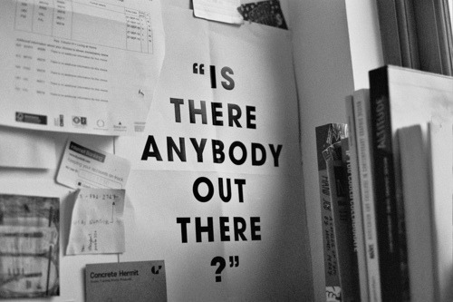

Is anybody out there?
I’ve been writing up notes for a while but never published them. I’ve profited from the transparency of other designers. I also forget things unless I write them down – this will serve as a reference.

This post (as well as any before 2021) is backdated. I want to roughly match my thoughts to the time in which I initialy wrote them down.